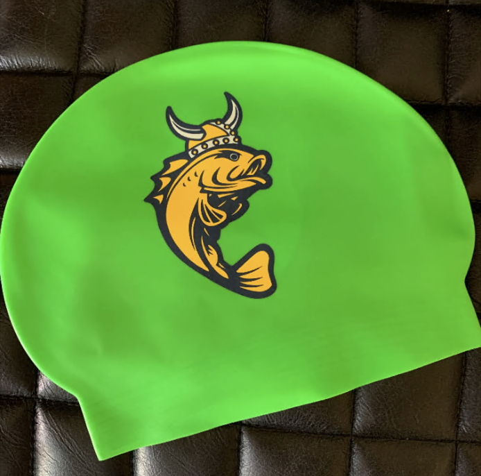
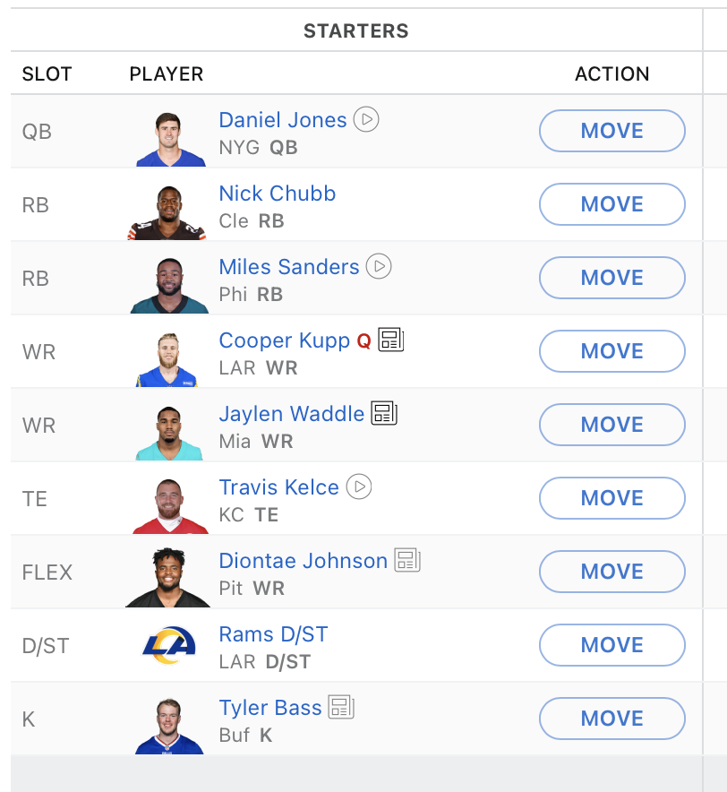

I am a huge sports fan. Besides baseball and golf, I will watch anything. Soccer, basketball, football, tennis, hockey (playoff only).I have been to multiple bears and bulls games and two soccer games in England. On top of watching the games, I also play fantasy football, soccer, and basketball. You can read more about that below.
My friends and I from highschool have been working on what we call the "fantasy analysis calculator." For the last 2 weeks, my friends and I have been waiting for the season to start. While waiting, we decided to try and make a Java program that helps us draft our optimal lineups. This is a Java program that takes in data from previous fantasy football season and dishes out fresh analysis and numbers. We are still in the very early stages of this program, and are excited to see where it goes. As the NFL season progress forward, we plan to enter player data on a weekly basis. Hopefully, by the end of the season we have a season worth of data to work with and we can create a program for calculating optimal ADP's. (Average Draft Position)
Through the pandemic, I took up photoshop. Originally, my high school digital imaging class peaked my interest, I proceeded to take it further. I even made a "Fiver" account and took offers from customers. While I definitely wasn't the best, I had a few takers. I made some money off of it, but haven't done it in a while. The images below are some of the pieces I made.
While in Nepal, I gave a speech at a local highschool. During my speech I spoke about life and education in the US.
Here is a short clip from that speech.
I have been a swimmer since I was in elementary school. I was a varsity swimmer in high school and swam for the "Swedish Fish" (Galter Life Center Swim Team). My events included the 200m butterfly, 100m I.M., and 200m relay. Since the pool wasn't open during covid, I began to run. Since then, I have done it at least 3 days a week.
I am currently in three leagues with friends and family. As the clock ticks down the on season starting, I have done a countless amount of mocks in preparation for the leagues. The pride and monetary value of fantasy football is fantastic, the thrill of winning your league can't be beat. With that being said, I hope to win all three of my leagues this year.
